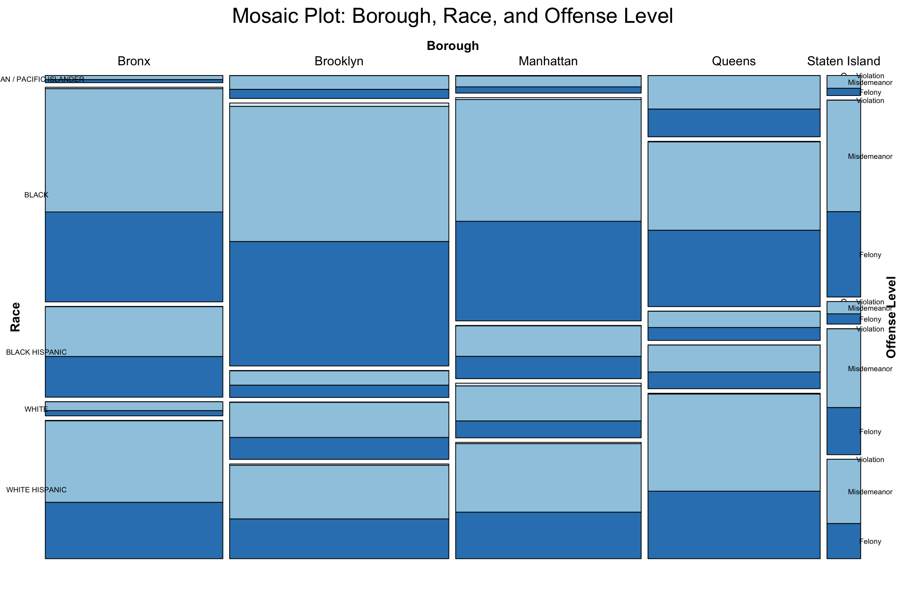
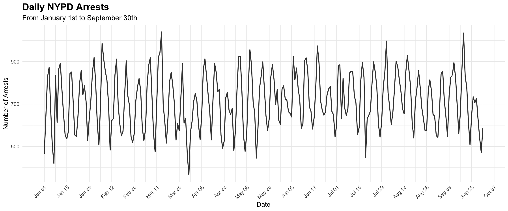

top_15_ofns_desc <- data |>group_by(OFNS_DESC) |>summarise(Count =n()) |>arrange(desc(Count)) |>head(15)# Plot the top 15 offense descriptions as percentagesggplot(top_15_ofns_desc, aes(x =reorder(OFNS_DESC, Count), y = Count)) +geom_bar(stat ="identity") +coord_flip() +labs(title ="Top 15 Arrest Categories",x ="Offense Description",y ="Number of Arrests" ) +theme_minimal()

Code
law_cat_cd_count <- data |>group_by(LAW_CAT_CD) |>summarize(Count =n()) |>arrange(desc(Count)) |>drop_na(LAW_CAT_CD) |>mutate(Percentage = (Count /sum(Count)) *100)ggplot(law_cat_cd_count, aes(x =reorder(LAW_CAT_CD, -Percentage), y = Percentage)) +geom_bar(stat ="identity") +ggtitle("Number of Arrests by LAW_CAT_CD") +xlab("LAW_CAT_CD") +ylab("Percentage of Total Arrests (%)")
Code
arrest_boro_count <- data |>group_by(ARREST_BORO) |>summarize(Count =n()) |>arrange(desc(Count))ggplot(arrest_boro_count, aes(x =reorder(ARREST_BORO, -Count), y = Count)) +geom_bar(stat ="identity") +ggtitle("Number of Arrests by ARREST_BORO") +xlab("ARREST_BORO") +ylab("Number of Arrests")
Code
jcode_count <- data |>group_by(JURISDICTION_CODE) |>summarize(Count =n()) |>arrange(desc(Count))ggplot(jcode_count, aes(x =reorder(JURISDICTION_CODE, -Count), y = Count)) +geom_bar(stat ="identity") +ggtitle("Number of Arrests by JURISDICTION_CODE") +xlab("JURISDICTION_CODE") +ylab("Number of Arrests")

Code
age_count <- data |>group_by(AGE_GROUP) |>summarize(Count =n()) |>arrange(desc(Count))ggplot(age_count, aes(x = AGE_GROUP, y = Count)) +geom_bar(stat ="identity") +ggtitle("Number of Arrests by AGE_GROUP") +xlab("AGE_GROUP") +ylab("Number of Arrests")
Code
race_count <- data |>group_by(PERP_RACE) |>summarize(Count =n()) |>arrange(desc(Count))ggplot(race_count, aes(x =reorder(PERP_RACE, -Count), y = Count)) +geom_bar(stat ="identity") +ggtitle("Number of Arrests by PERP_RACE") +xlab("PERP_RACE") +ylab("Number of Arrests") +theme(axis.text.x =element_text(angle =45, hjust =1))
# A tibble: 160 × 5
Sex Race AgeGroup CrimeType Count
<chr> <chr> <chr> <chr> <int>
1 F ASIAN / PACIFIC ISLANDER 18-24 Felony 93
2 F ASIAN / PACIFIC ISLANDER 18-24 Misdemeanor 195
3 F ASIAN / PACIFIC ISLANDER 18-24 Violation 3
4 F ASIAN / PACIFIC ISLANDER 25-44 Felony 334
5 F ASIAN / PACIFIC ISLANDER 25-44 Misdemeanor 587
6 F ASIAN / PACIFIC ISLANDER 25-44 Violation 27
7 F ASIAN / PACIFIC ISLANDER 45-64 Felony 187
8 F ASIAN / PACIFIC ISLANDER 45-64 Misdemeanor 342
9 F ASIAN / PACIFIC ISLANDER 45-64 Violation 2
10 F ASIAN / PACIFIC ISLANDER 65+ Felony 33
# ℹ 150 more rows
Code
ggplot(aggregated_data, aes(axis1 = Sex, axis2 = Race, axis3 = AgeGroup, axis4 = CrimeType, y = Count)) +geom_alluvium(aes(fill = CrimeType), width =0.2, alpha =0.8) +geom_stratum(width =0.2, fill ="lightgrey", color ="black") +geom_text(stat ="stratum", aes(label =after_stat(stratum)), size =3) +scale_x_discrete(limits =c("Sex", "Race", "AgeGroup", "CrimeType"), expand =c(0.1, 0.1)) +theme_minimal() +labs(title ="Alluvial Plot of Demographics and Crime Type Relationships",x ="Demographic and Crime Categories",y ="Number of Arrests",fill ="Crime Type" )
Code
ggplot(aggregated_data, aes(axis1 = Sex, axis2 = Race, axis3 = AgeGroup, axis4 = CrimeType, y = Count)) +geom_flow(color ="black") +geom_stratum(width =0.2, fill ="lightgrey", color ="black") +geom_text(stat ="stratum", aes(label =after_stat(stratum)), size =3) +scale_x_discrete(limits =c("Sex", "Race", "AgeGroup", "CrimeType"), expand =c(0.1, 0.1)) +theme_minimal() +labs(title ="Alluvial Plot of Demographics and Crime Type Relationships",x ="Demographic and Crime Categories",y ="Number of Arrests",fill ="Crime Type" )